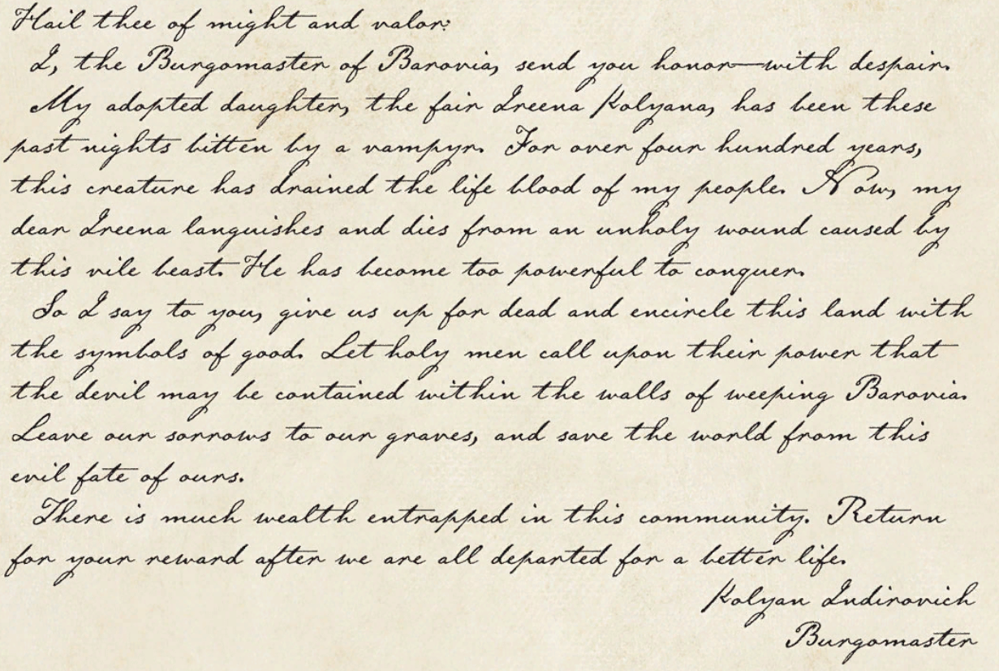

I only see Evan out. So we are on for tomorrow night.
Slightly belated but, here is the note from last session:
---
(Journal kept by Rachel today, because Vaelen is off doing Wizard stuff and not speaking to anybody)
Woke up this morning at the huge, creepy gates. Time to start searching for that Inn we were talking about. Hotcakes and syrup sounds like a much better breakfast than hardtack and nothing.
We found a road sign at the gates, this is the Old Svalich Road to a town called Barovia.
The gates closed behind us after we entered. Ominous. We continued down the road, through a dense and creepy wood.
We found a corpse in the woods, carrying a satchel with a sealed letter, the wax marked with a letter B. He seemed to have been attacked by wolves. A note accompanying the letter read:
"Dalvin - leave this by the gate".
Gregor assumed that the "B" was for "Blackthorn" and that the letter was addressed to him. He was right, sort of:
*Handout: Kolyan Indirovich's Letter v2

The Burgomaster speaks of a great evil and wants us to avoid his town.
We continued down the road to Barovia. The village looks small and poor, and surrounded by fields of stunted corn. The mists make the whole countryside gray and depressing. But a pie vendor we met in town sold us some of the greatest pies we've ever seen. Everyone except Artur had some and enjoyed it very much.
There is in fact a tavern in Barovia, although the tea and beer were watery and questionable. Didn't attempt the food yet. We met a gentleman named Ismark, the son of the Burgomaster, with whom we chatted at the tavern. Ismark hinted at a great danger facing his sister. He brought us to the Burgomaster's house, which seems to have been under siege recently.
The Burgomaster had died the night before. Ireena wants to bury him tomorrow at dawn, and asked us to help guard the house over night. They're worried about someone named Strahd taking them. We plan to spend the night at the mansion, helping to defend the Mayor's corpse until he can be properly buried.
We went to the local church to try and figure out what's been going on and what we can do about it. Father Donavich let us in. The church was a shambles and had clearly been attacked recently. We heard a voice come from underneath the floorboards, talking about how hungry it was. Father Donavich was not mentally stable and it was difficult to talk to him and get any information out of him. But it seems that his son, Doru, had been turned into a Vampire a year before, during a failed rebellion against Castle Ravenloft. Doru was locked in the church basement and was the voice we'd heard earlier.
We decided to leave the church be, and spend the rest of our daylight fortifying the Mayor's house.
---
Ben